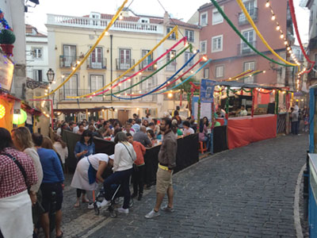

It's more than a Conference.
Rua Duque de Palmela 34, Lisbon, Portugal
If you're already in town the evening before the conference, come grab some light snacks and drinks and have a chat, it's on us! This will be held at the beautiful bar/terrace of Hotel Florida, where most of the speakers will be hosted. Open for all LXJS attendees, no further registration required.
We want you fit for the second conference day, so we're keeping this event short and simple. LXJS will email all attendees on the 25th with links to the available restaurantes and a place to pre-buy your meal. If you want to join, you just have to buy your seat before the 26th at 22pm.
For your reference, here's a map with the restaurant locations. Please take into account that these are reserved seats, so only show up if you bought yours.
Restaurante Chu-Chu is a grill house. ~15min walking from Venue. 15 Eur per person. Includes: Appetizers (bread, cheese, etc), Beer, Sangria, Stock wine/Vinho da Casa, Sodas, Water, Coffee, Desert. Main course (you'll have to choose in advance, when registering): Grilled Chicken, Grilled Black Pork, Grilled Picanha/rump cover, Grilled Sardines, Grilled Dourada/Gilt-head bream, Grilled Peixe Espada/Swordfish.
Restaurante A Gina is a grill house. ~20min walking from Venue. 18 Eur per person. Includes: Appetizers (bread, cheese, etc), Beer, Sangria, Stock wine/Vinho da Casa, Sodas, Water, Coffee, Desert. Main course (you'll have to choose in advance, when registering): Fried codfish paste with bean rice + Grilled Sardines, Fried codfish past with bean rice + Mix of Grilled Meat / Grelhada Mista, Poorly improvised vegetarian (they're not good at that).
Restaurante Jardim dos Sentidos is a Vegan/Vegetarian place. ~25min walking from Venue. 20 Eur per person. They have a closed menu where you can choose from some options once you're there. No need to choose the dish in advance.
Restaurante Nood is an Asian food place. ~35min walking from Venue (best take the subway to Baixa/Chiado on the blue line). 20 Eur per person. No need to choose the dish in advance. It includes an appetizer (Small salad or Miso soup). You'll be able to choose from 6 main course options (1 fish, 2 meat and 3 vegetarian): Yaki soba (chicken and shrimp), Teriyaki chicken, Szechuan meat (spicy), Yasai Shitake (rice and mushrooms), Amai Udon (contains peanuts), Coconut and Ginger Curry (with rice). You'll also be entitled to two drinks (beer, water, sodas) and a coffee.
Remember! you have to buy your seat before the 26th 10pm on the link we'll be sending to all attendees. Seats are limited. On two of the restaurants (Chu-Chu and A Gina) make sure you reply the Tito question after registration to choose a dish.
Largo de São Miguel, 1100-603 Lisbon, Portugal
For all LXJS attendees, nor further registrations required! Show up starting at 9pm. Getting there has to be taken as a small but very rewarding challenge - we will take you into the heart of old Lisbon where every street has its own stand and (deliciously bad) soundtrack.
At this square, with various stands, we'll have our own LXJS stand serving us for free and exclusively, from 9pm to 12pm (take your badge with you).
Drinks: Beer, Sangria, Ginjinha, Sodas, Coffee. Food: Pataniscas (codfish), Pastéis de Bacalhau (codfish), Rissóis de Camarão (shrimp), Croquetes de Carne (meat), Bifanas (meat on bread, best eaten with cheap mustard-like sauce). Deserts: Arroz Doce (sweet rice), Rabanadas (sweet fried bread). Vegetarians/vegans only: Chickpea (Garbanzo Beans) salad.
Our stand will stop serving food and drinks for free after 12pm. If you want to more or other food (including the famous sardines) there are lots of stands around with more food options.
We'll put up detailed instructions on how to get there closer to the date.
A place to share knowledge, expertise or just stories about MongoDB.
SAPO (our sponsor!) brings you two sessions, one about each of these frameworks. Both will focus on practical examples.
A meetup group for JavaScript developers, lovers, enthusiasts and explorers in Lisbon. Server-side and client-side. Talks and code shows, some day even hackathons.
Meet other developers using Meteor. Share your knowledge, apps, and get feedback from others. Meteor is an open-source platform for building top-quality web apps in a fraction of the time, whether you're an expert developer or just getting started.
NSA and GAFA are lurking to your personal data. How could we avoid it? @michielbdejong will be there to promote Unhosted web apps.
Node.js is getting ready for its next stable release and it’s a major milestone for the platform and community. We’re reaching out through local groups to share production user stories.
Yes, same days! Lisbon has endless options for you to watch the games, be it at a small traditional Tasca, or at one of the viewing parties. There's going to be one right next to the main Venue (Parque Eduardo VII). Even if you're not a football fan, it's a unique experience to observe and interact with the enthusiasm it generates in Portugal.
June in Lisbon is basically one big party. The City celebrates its patron saint (Stº António), which for you means the smell of sardines and little parties in small streets throughout the city. This website lists all of them. Highlights:
International Chinese And Portuguese Cinema Festival, a space of materialization of dreams, desires, wishes – of encounters, sharing and difference.
Empty Stages is an ongoing photographic project of Tim Etchells and Hugo Glendinning, documenting empty stages all over the world, in places ranging from amateur theatres, bars, schools, convention centres, church halls, municipal theatres and worker clubs.
Vintage Drawings and Current Graphic Works is a joint work of Ricardo Valentim, André Romão and Pedro Barateiro for the Chapel of Nossa Senhora da Conceição.
For eleven years now sardines have been the narrator of a story. Our protagonist, who has slowly won over the city, left the basket of the fishwife to show its multiple personalities in the exhibition “Which sardine are you?”
Forty identified suitcases will be in the Lisbon train stations, ready to challenge users to be carriers of A Mala (The Suitcase).
The Sobe e Desce project invites passenger in the Lisbon lifts to discover the architectural heritage building that is in the surrounding areas of each of these modes of transport, national monuments, by printing photographs on the outside.
So you like conferences? Let LXJS be the beginning of the season!